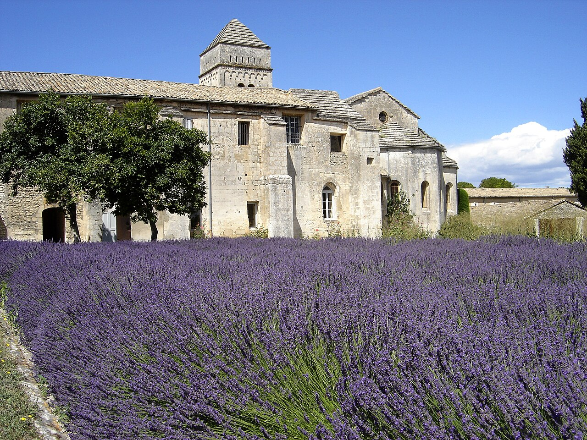

arrow_backChef-d'oeuvre de l'art roman provencal du XIe siecle, Saint-Paul-de-Mausole est indissociable de Vincent van Gogh qui y fut interne volontairement du 8 mai 1889 au 16 mai 1890. La periode la plus prolifique de sa vie.
Le cloitre aux chapiteaux sculptes et le clocher carre a toit pyramidal sont classes Monument Historique depuis 1883. Devenu maison de sante en 1807, il abrite encore aujourd'hui une clinique psychiatrique — la plus ancienne de France en activite continue.
La chambre de Van Gogh est reconstituee a l'identique — sa fenetre donnait sur les champs d'oliviers et de bles qui ont inspire La Nuit etoilee, Les Iris, Les Bles jaunes et tant d'autres.